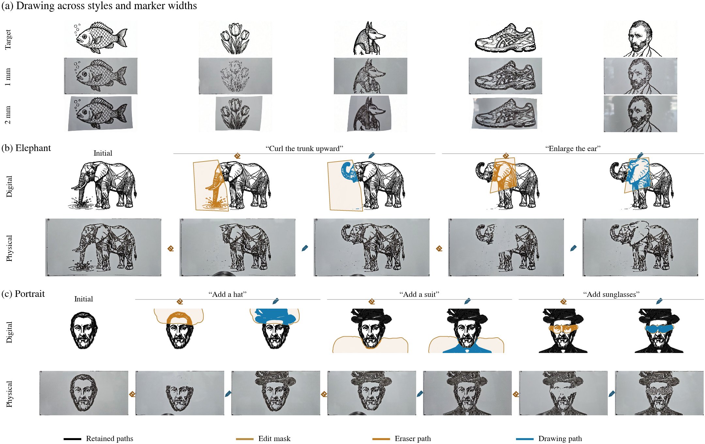
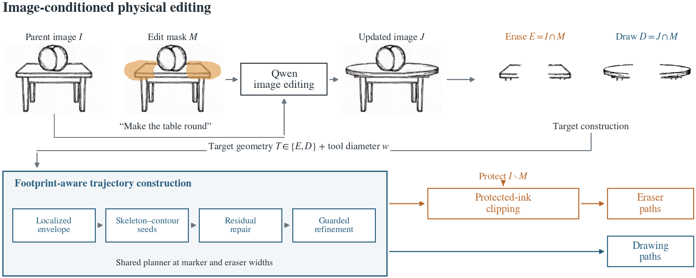
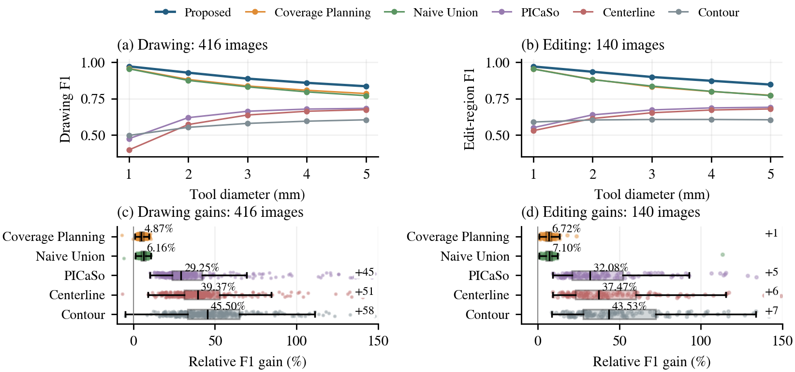

Robotic drawing · Selective erasure · Physical inpainting
Footprint-Aware Planning for Robotic Drawing and Physical Inpainting
One geometric planner turns binary artwork and local image edits into marker and eraser trajectories, accounting for the tool’s contact footprint.
Read the paper416Drawing images
140Evaluated image edits
1–5 mmEvaluated tool diameters
70Executed physical actions
Draw, erase, and redraw
The same footprint-aware construction plans additions and removals. Protected-ink clipping preserves artwork outside the selected edit region. Physical demonstrations use a 700 × 350 mm whiteboard, 1 mm and 2 mm markers, and a 2 mm eraser.

Paired-width drawings and successive edits. Orange indicates erasing, blue indicates drawing, and black indicates retained paths. Photographs document physical execution; reported F1 scores come from digital footprint evaluation.From image edits to finite-width paths
A localized spill envelope makes fine structures reachable. Seed generation, residual repair, and guarded refinement construct routes that preserve sampled contact. Image-edit history supplies the target and protected regions.

Drawing and editing across five tool widths
Across six methods, the benchmark contains 12,480 drawing evaluations and 4,200 editing evaluations. Mean drawing F1 increases from 0.8541 to 0.8967 compared with Coverage Planning; edit-region F1 increases from 0.8484 to 0.9053. These comparisons evaluate the saved implementations described in the paper.

Widths are averaged within each image, then images equally. The editing comparison uses 140 matched examples; two collected examples with polygon-overlay failures are excluded across all methods and widths.